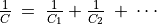

Measuring Capacitance in series combination¶
Objective
Measuring the capacitance of series combination of capacitors.

Procedure for two capacitors
- Connect one capacitor in IN1 and the second one in Ground. Connect the opposite ends of both capacitors together.
- Click on “Capacitance on IN1” . Should not touch the capacitor while measuring
Discussion
For a series combination of capacitors, the effective capacitance is given by the relation .